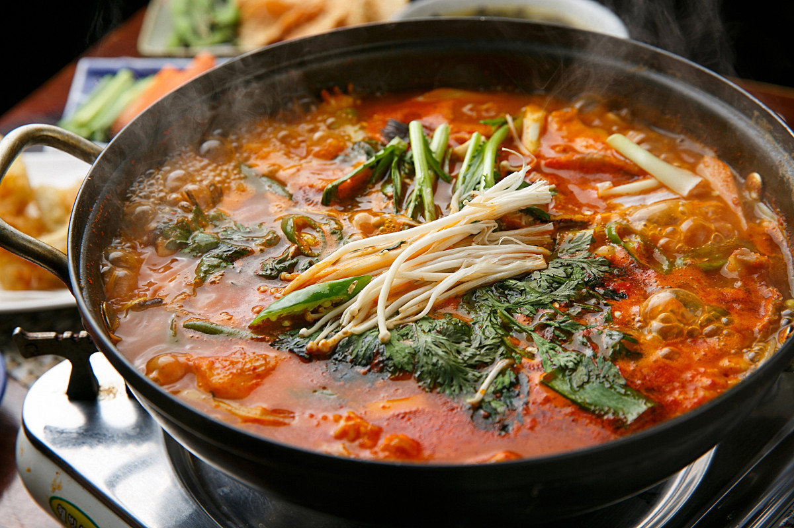

안녕하세요! 오늘은 2TV 생생정보 '스타 밥집' 코너에서 개그우먼 김미려님이 추천한 경기 고양시 덕양구 행주동의 맛집 행주추어매운탕을 소개해드리려고 합니다.
행주산성 먹거리촌에 자리한 이 노포 맛집의 시그니처 메뉴는 바로 "추어 매운탕"입니다! 일반 추어탕과는 전혀 다른 매력을 자랑한다고 하는데요. 🐟
| 메뉴 | 특징 |
|---|---|
| 🥇 추어 매운탕 (통추어) | 맑고 개운하며 얼큰한 국물 + 수제비·국수 함께 제공, 2인분 이상 주문 |
| 추어 매운탕 (간추어) | 추어를 갈아 넣은 버전, 1인분부터 주문 가능 |
| 🥈 메기 매운탕 | 담백하면서도 칼칼한 메기 매운탕 |
| 🥉 장어구이 | 숯불에 구운 고소하고 쫄깃한 장어 |
| ⭐ 매콤 낙지 덮밥 | 불맛 가득한 매콤 낙지와 밥의 환상 조합 |
"추어탕 특유의 텁텁함이 없고, 맑으면서도 얼큰해서 깔끔하게 먹을 수 있어요. 수제비와 국수가 들어 있어 양도 넉넉하고 정말 든든합니다. 추어탕을 싫어하는 사람도 이건 좋아할 맛!"
🚇 지하철: 3호선 원당역 또는 화정역 하차 후 버스·택시 환승
🚌 버스: 행주산성 방면 버스 이용
🅿️ 주차: 매장 주차장 이용 가능
📍 경기 고양시 덕양구 행주동 (행주산성 먹거리촌)
※ 본 포스팅은 KBS 2TV 생생정보 방송 내용을 기반으로 작성되었습니다. 방문 전 영업시간과 메뉴를 확인해주세요.